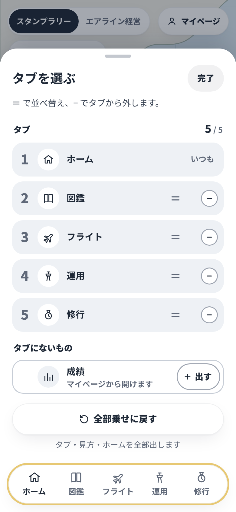
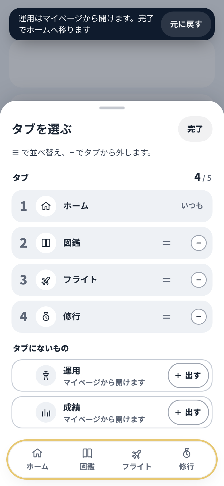
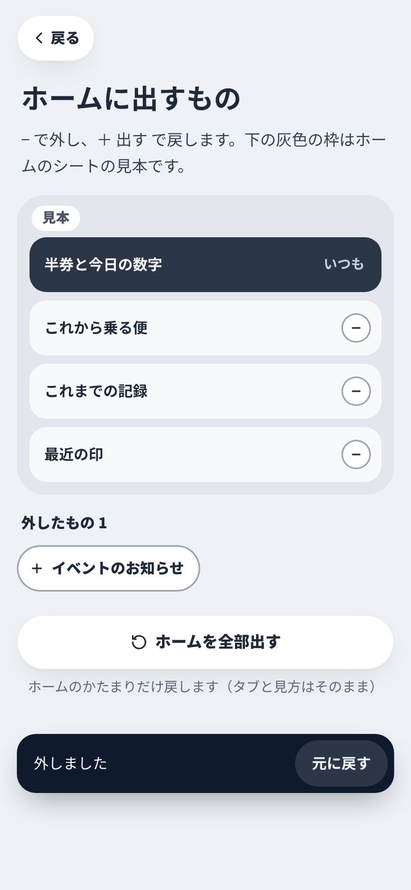
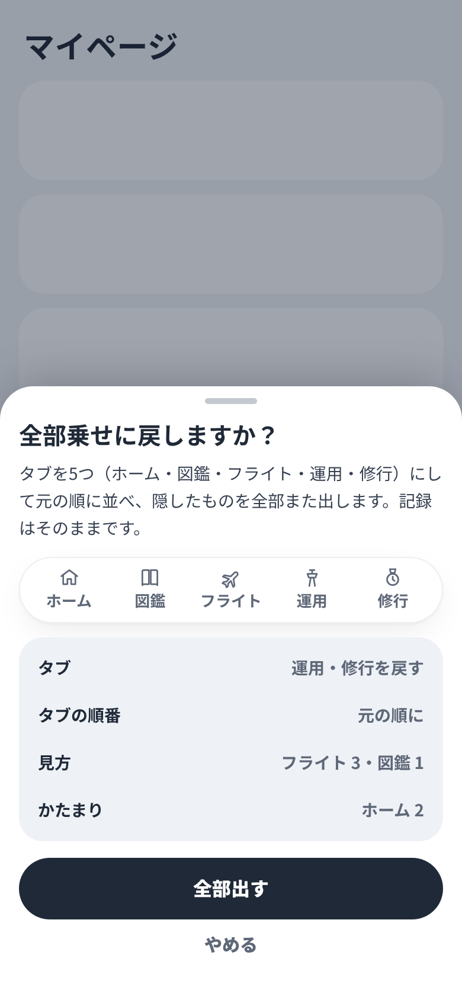
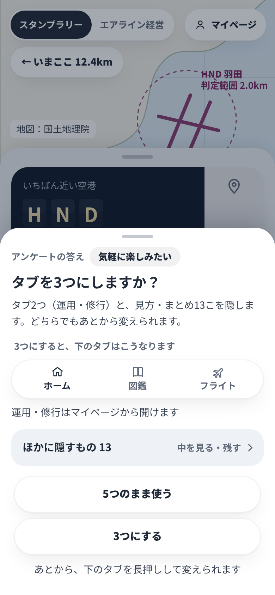
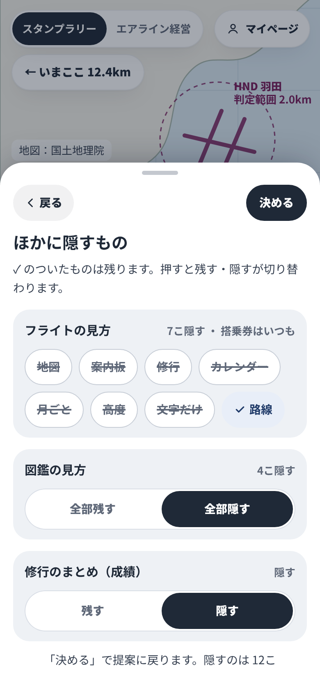
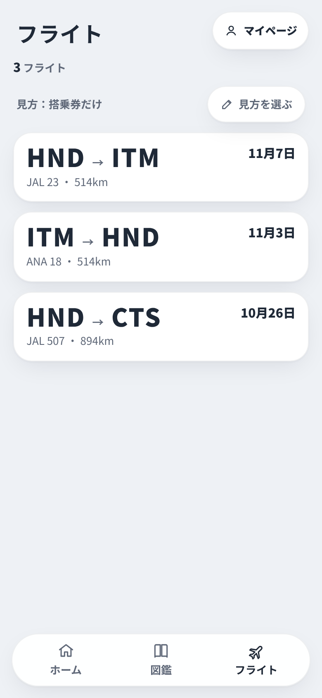
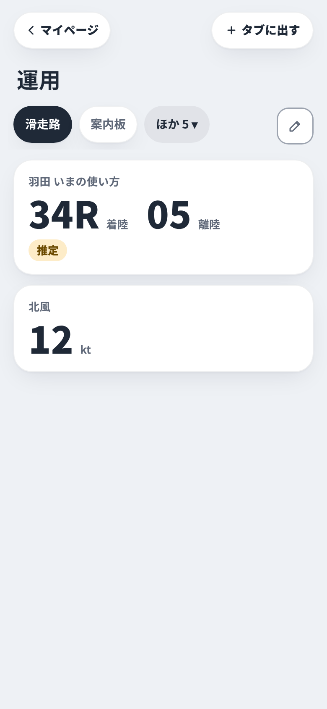

11/8 21時半の本人の決定（案3「タブから選ぶ」）を細かくした画面案。もとは design/all-in-filter-alt の C1〜C4。幅390で描き、png/ に高さ844と667の絵（-667）。アプリには入れていない。
外すのは「−」、戻すのは「＋ 出す」にそろえた。見本は灰色の枠と「見本」の札。全部乗せに戻すはマイページと C1 のシートだけ。答えは answer-1.md。

C1 タブを選ぶ− で外す・5/5・全部乗せに戻すは白で下に
C1b 外した直後行き先のトースト・今いるタブならホームへ
C2 ホームに出すもの見本の枠と札・本番の並び・ホームを全部出す
C3 全部乗せに戻すタブの順番も・戻したあと元に戻す
C4 タブを3つにしますか本物の3つの帯・タブ2つと13こ
C4b ほかに隠すもの画面ごとに一部だけ残す
T8 見方が1つだけ帯のかわりに小さい1行
T9 タブにない画面‹ マイページ・＋ タブに出す